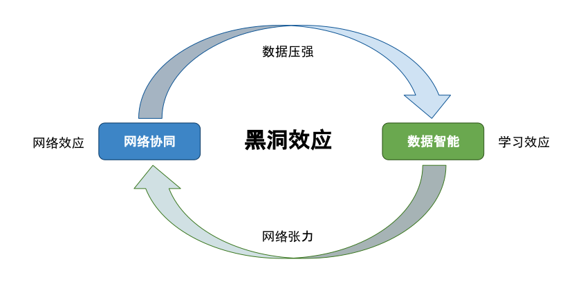
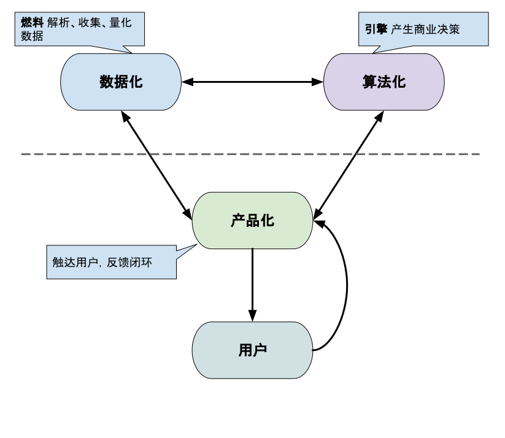

《智能商业》读书杂感

智能商业的作者是阿里巴巴的曾鸣教授，可以看做是作者执鞭阿里巴巴十年的经验总结。
在提笔写总结之前，我经常会想，读这样的书有什么用呢？因为自己的格局没有达到，读这样的总结其实很难理解作者的各中意昧，即便是写了笔记，体会必然也十分肤浅。后来便觉得没必须要考虑这些，这种类型的书就先囫囵吞枣，以后再反复咀嚼，真正明白之时，感触必然更加深刻。
不过，吞归吞，对于这种通识类的书应当整理出思维脉络，毕竟知识是一个网，找到其中关键节点才能理解整个网络。
书里共有六章，按照书作者的自述，实际上 2013 年就已经完成了初稿，但自觉没有统一框架，又在剩下的几年里反复更迭，补充案例，才写成了现在这样的效果。书中第一章讲的是智能商业，这一章讲的是微观层面的问题，即当今商业是由什么细胞组成的；第二三章讲商业模式与战略，这其实是宏观层面的问题，讲这些年和今后商业的大趋势是什么。前三章思路清晰、格局宏大，应该是作者先前的定稿。第四章作者笔锋一转，写到了组织术上，聊了了如何构建一支队伍，更好的完成上位者的商业策略；第五章讲了讲具体案例，是对前三章知识理论的补充说明；第六章则谈了一些对未来的展望。后三章更像对前三章思路的补充，更像是作者后续的修改与补充。
本文准备简单聊一聊前三章，智能商业的组成与商业模式的范式转移。

作者在第一章一上来就提纲挈领地亮明了主旨：智能商业是网络协同+数据智能的双螺旋构成。抛去这两个晦涩的名词不看，我们不如先看看作者在数据黑洞这里提出的灵魂四问：
在智能商业的时代，想要让自己的企业获得成功，首先要问自己4个问题：
- 第一个问题，我的企业是否能最大限度地实现网络化？
- 第二个问题，我的企业能否尽可能地引入机器的学习效应？
- 第三个问题，我的企业能不能在网络扩张的过程中，尽可能地用机器决策取代人工决策？
- 第四个问题，我的企业能否让自己收集的数据与更多不同类型的数据产生交换？
这4个问题，每解决一个，你就离成功更近一步。
– P103 1.06 黑洞效应
先来说说第一个问题，企业的网络化。作者在书里撂下一句狠话：
商业最重要的就是结网。
这里的网，其实有两层含义：
第一层讲的是真真切切的互联网：目前很多小企业或者处在点模式、线模式的经营范式，如果不把自己置身于网络之上，很难扩大规模，找到有效需求；更加无法进行数据在网络上的积累，向前再走一步。
第二层讲的则是网络协同效应：作者认为为了精准的找寻有效需求，未来的商业模式必定是 C2B 的模式，指通过客户喜好确定需求，影响商家的决策。然而这一步不成骤成，需要有一个过度模式：S2B2C，也就是所谓的没有中间商赚差价，我就是最大的中间商。这里的 S 本身就是一张大网，它网罗了供应商、网罗了客户，通过数据对二者赋能。滴滴、大搜车、土巴兔等本质上都是在构建这个 S。
个人感觉『网』在作者的语境里，成了一种船新的思维模式，这套理论可以解释很多东西：例如后续作者聊到『网红』，网红本身就是将消费者从一个个零散的群体凝聚成网络的一个工具，它能够一定程度地分担 S 的作用，辅助供应链更好的决策，因此本身具有很高的商业价值。
说了这么多，对于小的 B 来说，最最重要的还是接入互联网，不然在新型商业模式的碾压之下无路可走；对于个人来说，进入大中台、找到网络赋能最核心的地方，才能紧跟浪潮。
然后看看二三问：机器学习与决策。这里其实讲的双螺旋的第二条旋：数据智能。作为一个前端工程师，我只想聊一聊数据化，智能的事情可以交给算法的老哥来做。作者在书里讲：
『数据化』本质上是将一种现象转变为可量化形式的过程。
提出全面质量管理的爱德华兹·戴明（彼得·德鲁克似乎也讲过）讲：
You can’t manage what you can’t measure.
实际上『数据化』就是如何测量的一个重要手段，这里其实对用户侧的工程师提出了一定的要求：尽可能的记录全量数据、能够进行一定程度的分析、形成反馈闭环。

如果你对具体怎么做毫无头绪，作者其实也贴心地给出了开始行动方案：
有效的数据初始化是大数据创造价值至关重要的第一步。
先进行埋点，把所有数据进行统计，事后再慢慢调整分析，让数据驱动决策。
最后看看第四问，实际上这里讲的是如何形成黑洞效应。作者认为构建了网络协同和数据智能的商业体能够依靠网络进行自我传播，因为数据本身会产生压强，而且传播成本极低（新时代、高维度的造纸术、印刷术），因此这个网络会无限繁殖扩张。这一点作为一个工程师而不是企业主，只能先畅想一下，有点超纲。
最后总结一下：合上本书，发现其实所有内容归根结底就是一句话：如何创造有效需求。
按照马克思的理论，大资本倾向于生产过剩，工人们却无法产生需求，最终正反馈循环崩塌。这个简单的模型只是说明了总体趋势，但实际上还有很多细节可以进行调整续命：如书里的利用数据智能进行有效需求挖掘，尽可能的填补实业无法发掘的需求，无疑是后面的资本主义商业的续命发展方向。
不过对于普通人来说，知道两点就已足够：
- 奔赴大中台建设，找到大 S 企业，在未来的一段时间内『拥有数据智能和网络协同大型中间商』是发展方向；
- 学习机器学习、数据分析的知识。还要多学数学，『学数学买菜用不到』已经成为历史，未来的小商家可能都要通过大 S 来买菜（比如美菜网之类），大 S 里几乎全是帮你公式计算怎么买菜合理的老铁们，你当然用不到，但是你得加钱。